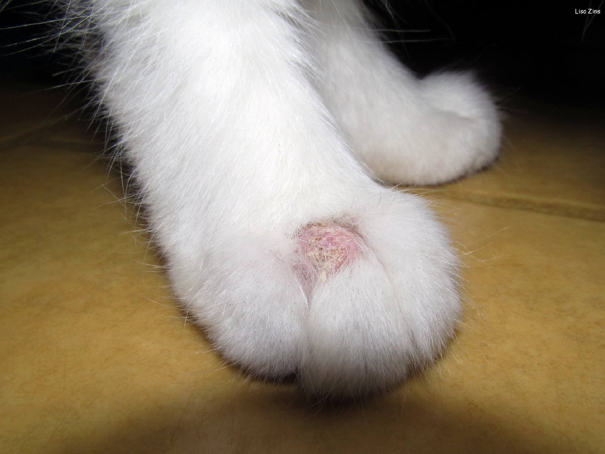
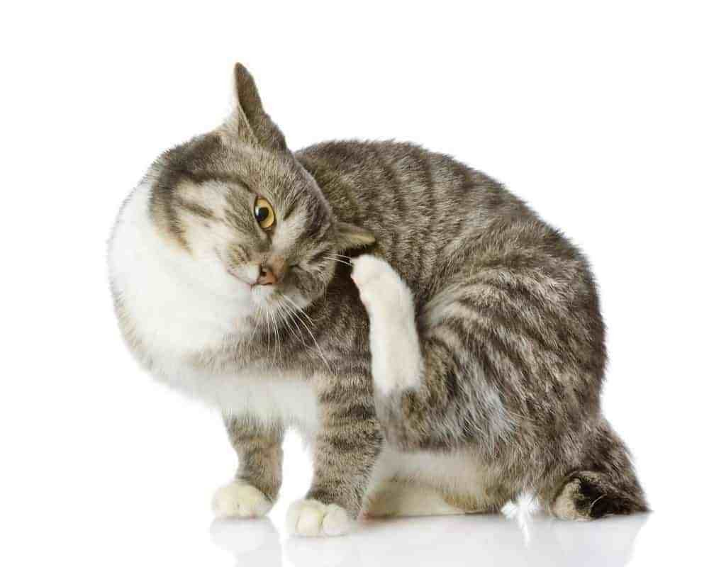
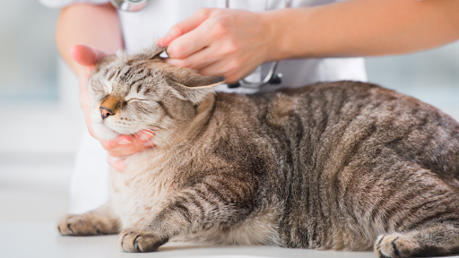
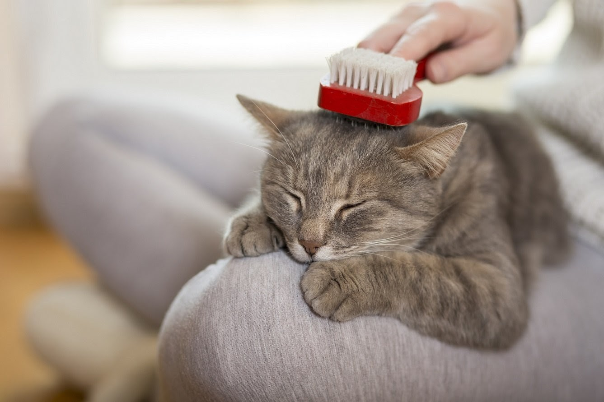

Nấm là bệnh thường xuyên xuất hiện ở thú cưng trong nhà, đặc biệt là mèo. Vì thế hôm nay Mini Pet sẽ tổng hợp một số kiến thức cũng như những việc cần phải làm khi mèo cưng nhà bạn mắc bệnh này.
1. Bệnh nấm ở mèo là gì?
Bệnh nấm mèo là căn bệnh khá phổ biến, chúng xảy ra ở cả chó và mèo và xâm nhập vào cơ thể thông qua vết xước trên da. Nấm được tìm thấy trong đất và trong phân của động vật bị nhiễm bệnh. Mèo mọi lứa tuổi đều có nguy cơ bị mắc bệnh.
Tuy nhiên, có một số loại nấm chỉ tấn công mèo bị bệnh hoặc bị suy giảm hệ miễn dịch. Một số loại nấm không gây ra hậu nghiêm trọng và dễ dàng điều trị bằng thuốc. Có một số loại nấm có khả năng làm hỏng da và gây nguy hiểm cho sức khỏe của nó.
2. Triệu chứng khi mèo bị nấm
Bệnh nấm ở mèo có thể gây ra một loạt các triệu chứng thường gặp như: mèo ngứa, khó chịu và thường xuyên gãi vùng da bị nấm; da đỏ có vảy, mủ nhầy; mèo bị nấm rụng lông; bề mặt da có lớp dịch nhờn có mùi hôi; da dày lên và tăng sắc tố da ở các vùng da bị tổn thương; hạch bạch huyết sưng.
3. Nguyên nhân mèo bị nấm
Dưới đây là một số nguyên nhân chính của bệnh nấm ở mèo: do bọ chét cắn đốt gây ra vết thương trên da; ung thư tuyến tụy hoặc gan, cơ thể suy giảm miễn dịch; mèo không được vệ sinh, tắm rửa thường xuyên đúng cách; đặc biệt ở những giống mèo lông dài.; sấy lông không khô hoàn toàn, độ ẩm trên da cạo, lông bết lại tạo điều kiện lý tưởng cho bào tử nấm nảy mầm nhất là trong điều kiện nóng ẩm ở nước ta; tiếp xúc với mầm bệnh.; nhiễm nấm qua các vết thương hở trên da.
4. Cách điều trị và chăm sóc cho mèo bị nấm
Mèo bị nấm có thể được điều trị bằng thuốc trị nấm cho mèo như: thuốc mỡ, thuốc kháng nấm đường uống. Trường hợp da có u nang, apxe cần can thiệp phẫu thuật để cắt bỏ. Trong một số trường hợp, các u nang này tái phát lại và khó điều trị. Những con mèo bị bệnh nặng cần được điều trị nội trú trong bệnh viện cho đến khi các triệu chứng được cải thiện. Bác sĩ thú y sẽ cung cấp cho bạn hướng dẫn về cách tránh bị nhiễm bệnh trước khi bạn đưa mèo về nhà.
Thời gian phục hồi tùy thuộc vào mức độ nghiêm trọng của bệnh và loại nấm có trong da. Một số loại thuốc điều nấm phải mất vài tuần mới thấy sự cải thiện các triệu chứng. Bạn có thể mang mèo về nhà tự điều trị theo hướng dẫn của bác sỹ thú y, nhưng cần định kỳ thăm khám bác sĩ thú y hàng tuần để kiểm tra.
Trong một số ít trường hợp, bệnh nấm da ở mèo có thể bị nhiễm trùng thứ phát gây ra các vấn đề sức khỏe nghiêm trọng hoặc không thể điều trị được. Bác sĩ sẽ đề nghị quá trình điều trị tốt nhất trong những trường hợp này.
Trên đây là một số kiến thức căn bản mà bạn có thể áp dụng khi mèo bị nấm. Mini Pet hy vọng những chú mèo đáng yêu của bạn sẽ sớm khỏe mạnh.